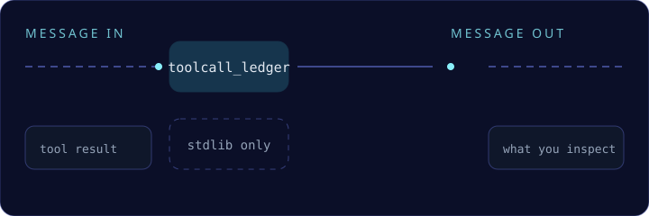

Install
consolepip install toolcall-ledger
Use
pythonfrom toolcall_ledger import Ledger
ledger = Ledger("runs/today.jsonl", max_result_chars=4000)
# record what a tool returned
ledger.record("search", {"q": "python"}, result=["a", "b"], duration=0.12)
# run a call at most once per (tool, arguments)
ledger.execute("charge_card", {"id": "cus_1", "amount": 500}, charge_card)
# ask what happened
ledger.replay("charge_card", {"amount": 500, "id": "cus_1"}) # the recorded result
ledger.find("search", {"q": "python"}) # every matching record
ledger.records[-1] # the last Record
ledger.verify() # LedgerCorrupted on tampering
console$ toolcall-ledger runs/today.jsonl
0 send_email [ok] 0.2ms 6f2c1a3e5b0d
1 search [ok] 120.1ms 8bf5a385c929
2 record(s), chain ok
$ toolcall-ledger runs/today.jsonl --check # exit 1 if the chain does not verify
$ toolcall-ledger runs/today.jsonl --json --tool search
What goes in a record
| field | meaning |
|---|---|
index | position in the chain; a gap or a reorder is detected |
tool, arguments | the call, with secret-looking argument values masked |
key | idempotency key: sha256(tool, canonical arguments)[:32] |
ok, result, error, duration | the outcome |
at | Unix timestamp |
digest | sha256(previous digest, canonical record) |
Masked by default, at any depth and case-insensitively: password, passwd, secret, token, api_key, apikey, authorization, auth, credential, private, session, cookie. Pass markers=(...) for your own.
Rules
- The chain detects an edit, a reorder or a changed index. Removing lines from
the end of a file is indistinguishable from a shorter run — keep the file somewhere append-only (a bucket with object-lock, or a store with retention) if that matters.
executetreats "no earlier successful call" and "an earlier call returnedNone" the
same way, so a tool returning None is not memoised. Return a small marker instead.
- Results longer than
max_result_charsare truncated with a marker; the digests still
cover the truncated text.
- Argument canonicalisation is JSON: dict order does not matter, a
datetimeor an
object is stored as repr. Normalise exotic arguments yourself if you need stability.
Why not just a log file
A plain JSONL log answers "what happened". This one answers "what happened, in this order, and has anything been changed since". That is the difference between a debugging aid and an audit trail you can hand to someone.
Development
consolepython -m venv .venv
.venv/bin/pip install -e ".[test]"
.venv/bin/pytest
The suite covers every line of the package (pytest --cov --cov-branch), and the examples in the docstrings run as tests through --doctest-modules.
License
MIT.